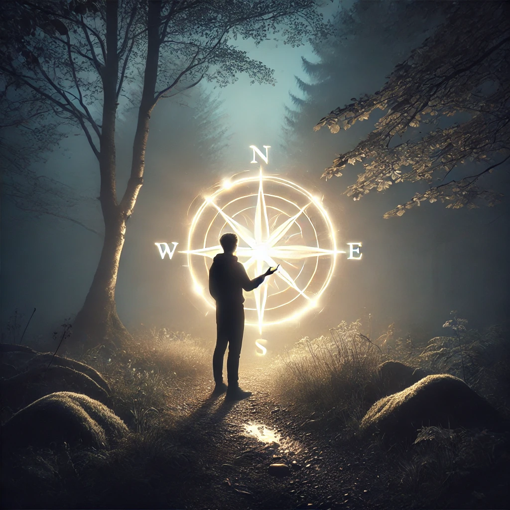

The chaos around you feels insurmountable, the air thick with tension and the compass in your hand trembling. You feel a spark deep within—a faint, intuitive call to reach outward, to seek connection beyond yourself. Closing your eyes, you let your thoughts ripple out like waves, a silent plea for guidance.
The air shifts, and a faint glow appears in the distance. It grows brighter, taking the shape of a radiant figure cloaked in shimmering light. The figure approaches, emanating calm and wisdom. Their voice, soft yet powerful, echoes within you:
“To call for help is not a weakness, but a strength. The universe answers those who are open to receiving. What is it that you seek?”
The glowing figure extends their hand, offering guidance. You feel a profound connection to their presence, as though they have always been a part of your journey.

How will you proceed?